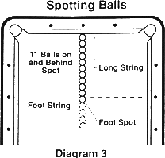

These general rules apply to all pocket billiard games, UNLESS specifically noted to the contrary in the individual game rules.
1. TABLES, BALLS, EQUIPMENT. All games described in these rules are designed for tables, balls and equipment meeting the standards prescribed in the BCA Equipment Specifications .
2. RACKING THE BALLS. When racking the balls a triangle must be used, and the apex ball is to be spotted on the foot spot. All the balls must be lined up behind the apex ball and pressed together so that they all have contact with each other.
3. STRIKING CUE BALL. Legal shots require that the cue ball be struck only with the cue tip. Failure to meet this requirement is a foul.
4. FAILURE TO POCKET A BALL. If a player fails to pocket a ball on a legal shot, then the player's inning is over, and it is the opponent's turn at the table.
5. LAG FOR BREAK. The following procedure is used for the lag for the opening break. Each player should use balls of equal size and weight (preferably cue balls but, when not available, non-striped object balls). With the balls in hand behind the head string, one player to the left and one to the right of the head spot, the balls are shot simultaneously to the foot cushion and back to the head end of the table. The player whose ball is the closest to the innermost edge of the head cushion wins the lag. The lagged ball must contact the foot cushion at least once. Other cushion contacts are immaterial, except as prohibited below.
It is an automatic loss of the lag if: (1) the ball crosses into the opponent's half of the table, (2) the ball fails to contact the foot cushion, (3) the ball drops into a pocket, (4) the ball jumps the table, (5) the ball touches the long cushion, (6) the ball rests within the corner pocket and past the nose of the head cushion, or (7) the ball contacts the foot rail more than once. If both players violate automatic-loss lag rules, or if the referee is unable to determine which ball is closer, the lag is a tie and is replayed.
6. OPENING BREAK SHOT. The opening break shot is determined by either lag or lot. (The lag for break procedure is required for tournament and other formal competition.) The player winning the lag or lot has the choice of performing the opening break shot or assigning it to the opponent.
7. CUE BALL ON OPENING BREAK. The opening break shot is taken with cue ball in hand behind the head string. The object balls are positioned according to specific game rules. On the opening break, the game is considered to have commenced once the cue ball has been struck by the cue tip and crosses the head string.
8. DEFLECTING THE CUE BALL ON THE GAMES OPENING BREAK. On the break shot, stopping or deflecting the cue ball after it has crossed the head string and prior to hitting the racked balls is considered a foul and loss of turn. The opponent has the option of receiving cue ball in hand behind the head string or passing the cue ball in hand behind the head string back to the offending player. (Exception: ball in hand on the whole table: see rule 1.3 for 9-Ball). A warning must be given that a second violation during the match will result in the loss of the match by forfeiture. (See Rule 28.)
9. CUE BALL IN HAND BEHIND THE HEAD STRING. This situation applies in specific games whereby the opening break is administered or a player's scratching is penalized by the incoming player having cue ball in hand behind the head string. The incoming player may place the cue ball anywhere behind the head string.
The shooting player may shoot at any object ball as long as the base of the object ball is on or below the head string. He may not shoot at any ball, the base of which is above the head string, unless he first shoots the cue ball below the head string and then by hitting a rail causes the cue ball to come back above the head string and hit the object ball. The base of the ball (the point of the ball touching the table) determines whether it is above or below the head string.
If the incoming player inadvertently places the cue ball on or below the head string, the referee or the opposing player must inform the shooting player of improper positioning of the cue ball before the shot is made. If the opposing player does not so inform the shooting player before the shot is made, the shot is considered legal. If the shooting player is informed of improper positioning, he must then reposition the cue ball. If a player positions the cue ball completely and obviously outside the kitchen and shoots the cue ball, it is a foul, if called by the opponent or referee.
When the cue ball is in hand behind the head string, it remains in hand (not in play) until the player drives the cue ball past the head string by striking it with his cue tip.
The cue ball may be ADJUSTED by the player's hand, cue, etc., so long as it remains in hand. Once the cue ball is in play per the above, it may not be impeded in any way by the player; to do so is to commit a foul.
10. POCKETED BALLS. A ball is considered as a pocketed ball if as a result of an otherwise legal shot, it drops off the bed of the table into the pocket and remains there. (A ball that drops out of a ball return system onto the floor is not to be construed as a ball that has not remained pocketed.) A ball that rebounds from a pocket back onto the table bed is not a pocketed ball.
11. POSITION OF BALLS. The position of a ball is judged by where its base (or center) rests.
12. FOOT ON FLOOR. It is a foul if a player shoots when at least one foot is not in contact with the floor. Foot attire must be normal in regard to size, shape and manner in which it is worn.
13. SHOOTING WITH BALLS IN MOTION. It is a foul if a player shoots while the cue ball or any object ball is in motion (a spinning ball is in motion).
14. COMPLETION OF STROKE. A stroke is not complete (and therefore is not counted) until all balls on the table have become motionless after the stroke (a spinning ball is in motion).
15. HEAD STRING DEFINED. The area behind the head string does not include the head string. Thus an object ball that is dead center on the head string is playable when specific game rules require that a player must shoot at a ball past the head string. Likewise, the cue ball when being put in play behind the head string (cue ball in hand behind the head string), may not be placed directly on the head string; it must be behind it.
16. GENERAL RULE, ALL FOULS. Though the penalties for fouls differ from game to game, the following apply to all fouls: (1) player's inning ends; (2) if on a stroke, the stroke is invalid and any pocketed balls are not counted to the shooter's credit; and (3) any ball(s) is respotted only if the rules of the specific game require it.
17. FAILURE TO CONTACT OBJECT BALL. It is a foul if on a stroke the cue ball fails to make contact with any legal object ball first. Playing away from a touching ball does not constitute having hit that ball.
18. LEGAL SHOT. Unless otherwise stated in a specific game rule, a player must cause the cue ball to contact a legal object ball and then (1) pocket a numbered ball, or (2) cause the cue ball or any numbered ball to contact a cushion. Failure to meet these requirements is a foul.
19. CUE BALL SCRATCH. It is a foul (scratch) if on a stroke, the cue ball is pocketed. If the cue ball touches an object ball that was already pocketed (for example, in a pocket full of object balls), the shot is a foul.
20. FOULS BY TOUCHING BALLS. It is a foul to strike, touch or in any way make contact with the cue ball in play or any object balls in play with anything (the body, clothing, chalk, mechanical bridge, cue shaft, etc.) EXCEPT the cue tip (while attached to the cue shaft), which may contact the cue ball in the execution of a legal shot. Whenever a referee is presiding over a match, any object ball moved during a standard foul must be returned as closely as possible to its original position as judged by the referee, and the incoming player does not have the option of restoration.
21. FOUL BY PLACEMENT. Touching any object ball with the cue ball while it is in hand is a foul.
22. FOULS BY DOUBLE HITS. If the cue ball is touching the required object ball prior to the shot, the player may shoot towards it, providing that any normal stroke is employed. If the cue stick strikes the cue ball more than once on a shot, or if the cue stick is in contact with the cue ball when or after the cue ball contacts an object ball, the shot is foul. If a third ball is close by, care should be taken not to foul that ball under the first part of this rule.
23. PUSH SHOT FOULS. It is a foul if the cue ball is pushed by the cue tip, with contact being maintained for more than the momentary time commensurate with a stroked shot. (Such shots are usually referred to as push shots.)
24. PLAYER RESPONSIBILITY FOULS. The player is responsible for chalk, bridges, files and any other items or equipment he brings to, uses at, or causes to approximate the table. If he drops a piece of chalk, or knocks off a mechanical bridge head, as examples, he is guilty of a foul should such an object make contact with any ball in play (or the cue ball only if no referee is presiding over the match).
25. ILLEGAL JUMPING OF BALL. It is a foul if a player strikes the cue ball below center ("digs under" it) and intentionally causes it to rise off the bed of the table in an effort to clear an obstructing ball. such jumping action may occasionally occur accidentally, and such "jumps" are not to be considered fouls on their face; they may still be ruled foul strokes, if for example, the ferrule or cue shaft makes contact with the cue ball in the course of the shot.
26. JUMP SHOTS. Unless otherwise stated in rules for a specific game it is legal to cause the cue ball to rise off the bed of the table by elevating the cue stick on the shot, and forcing the cue ball to rebound from the bed of the table. Any miscue when executing a jump shot is a foul.
27. BALLS JUMPED OFF TABLE. Balls coming to rest other than on the bed of the table after a stroke (on the cushion top, rail surface, floor, etc.) are considered jumped balls. Balls may bounce on the cushion tops and rails of the table in play without being jumped balls if they return to the bed of the table
under their own power and without touching anything not a part of the table. The table shall consist of the permanent part of the table proper. (Balls that strike or touch anything not a part of the table, such as the light fixture, chalk on the rails and cushion tops, etc., shall be considered jumped balls even though they might return to the bed of the table after contacting items which are not parts of the table proper).
In all pocket billiard games when a stroke results in the cue ball or any object ball being a jumped ball off the table, the stroke is a foul. All jumped object balls are spotted (except in Nine Ball) when all balls have stopped moving. See specific game rules for putting the cue ball in play after a jumped cue ball foul.
28. SPECIAL INTENTIONAL FOUL PENALTY. The cue ball in play shall not be intentionally struck with anything other than a cue's attached tip (such as the ferrule, shaft, etc.). While such contact is automatically a foul under the provisions of Rule 19., if the referee deems the contact to be intentional, he shall warn the player once during a match that a second violation during that match will result in the loss of the match by forfeiture. If a second violation does occur, the match must be forfeited.
29. ONE FOUL LIMIT. Unless specific game rules dictate otherwise, only one foul is assessed on a player in each inning; if different penalties can apply, the most severe penalty is the factor determining which foul is assessed.
30. BALLS MOVING SPONTANEOUSLY. If a ball shifts, settles, turns or otherwise moves "by itself," the ball shall remain in the position it assumed and play continues. A hanging ball that falls into a pocket "by itself" after being motionless for 5 seconds or longer shall be replaced as closely as possible to its position prior to falling, and play shall continue.
If an object ball drops into a pocket "by itself" as a player shoots at it, so that the cue ball passes over the spot the ball had been on, unable to hit it, the cue ball and object ball are to be replaced to their positions prior to the stroke, and the player may shoot again. Any other object balls disturbed on the stroke are also to be replaced to their original positions before the shooter replays.
31. SPOTTING BALLS. When specific game rules call for spotting balls, they shall be replaced on the table on the long string after the stroke is complete. A single ball is placed on the foot spot; if more than one ball is to be spotted, they are placed on the long string in ascending numerical order, beginning on the foot spot and advancing toward the foot rail.

When balls on or near the foot spot or long string interfere with the spotting of balls, the balls to be spotted are placed on the long string as close as possible to the foot spot without moving the interfering balls. Spotted balls are to be placed as close as possible or frozen (at the referee's discretion) to such interfering balls, except when the cue ball is interfering; balls to be spotted against the cue ball are placed as close as possible without being frozen.
If there is insufficient room on the long string between the foot spot and the foot rail cushion for balls that must be spotted, such balls are then placed on the extension of the long string "in front" of the foot spot (between the foot spot and the center spot), as near as possible to the foot spot and in the same numerical order as if they were spotted "behind" the foot spot (lowest numbered ball closest to the foot spot).
32. JAWED BALLS. If two or more balls are locked between the jaws or sides of the pocket, with one or more suspended in air, the referee shall inspect the balls in position and follow this procedure: he shall visually (or physically if he desires) project each ball directly downward from its locked position; any ball that in his judgement would fall in the pocket if so moved directly downward is a pocketed ball, while any ball that would come to rest on the bed of the table is not pocketed. The balls are then placed according to the referee's assessment, and play continues according to specific game rules as if no locking or jawing of balls had occurred.
33. ADDITIONAL POCKETED BALLS. If extra balls are pocketed on a legal scoring stroke, they are counted in accord with the scoring rules for the particular game.
34. NON-PLAYER INTERFERENCE. If the balls are moved (or a player bumped such that play is directly affected) by a non-player during the match, the balls shall be replaced as near as possible to their original positions immediately prior to the incident, and play shall resume with no penalty on the player affected. If the match is officiated, the referee shall replace the balls. This rule shall also apply to "act of God" interference, such as earthquake, hurricane, light fixture falling, power failure, etc. If the balls cannot be restored to their original positions, replay the game with the original player breaking. This rule is not applicable to 14.1 Continuous where the game consists of successive racks: the rack in progress will be discontinued and a completely new rack will be started with the requirements of the normal opening break (players lag for break). Scoring of points is to be resumed at the score as it stood at the moment of game disruption.
35. BREAKING SUBSEQUENT RACKS. In a match that consists of short rack games, the winner of each game breaks in the next. The following are common options that may be designated by tournament officials in advance: (1) Players alternate break. (2) Loser breaks. (3) Player trailing in games score breaks the next game.
36. PLAY BY INNINGS. During the course of play, players alternate turns (innings) at the table, with a player's inning ending when he either fails to legally pocket a ball, or fouls.
When an inning ends free of a foul, the incoming player accepts the table in position.
37. OBJECT BALL FROZEN TO CUSHION OR CUE BALL. This rule applies to any shot where the cue ball's first contact with a ball is with one that is frozen to a cushion or to the cue ball itself. after the cue ball makes contact with the frozen object ball, the shot must result in either (1) a ball being pocketed, or (2) the cue ball contacting a cushion, or (3) the frozen ball being caused to contact a cushion (not merely rebounding from the cushion it was frozen to), or (4) another object ball being caused to contact a cushion to which it was not already in contact with. Failure to satisfy one of those four requirements is a foul. (Note: 14.1 and other games specify additional requirements and applications of this rule; see specific game rules.)
An object ball is not considered frozen to a rail unless it is examined and announced as such by either the referee or one of the players prior to that object ball being involved in a shot.
38. PLAYING FROM BEHIND THE STRING. When a player has the cue ball in hand behind the string (in the kitchen), he must drive the cue ball to a point outside the kitchen before it contacts either a cushion or an object ball. Failure to do so is a foul if a referee is presiding over a match. If no referee, the opponent has the option to call it either a foul or to require the offending player to replay the shot again with the balls restored to their positions prior to the shot (and with no foul penalty imposed).
Exception: if an object ball lies on or outside the head string (and is thus playable) but so close that the cue ball contacts it before the cue ball is out of the kitchen, the ball can be legally played.
If, with cue ball in hand behind the headstring and while the shooter is attempting a legitimate shot, the cue ball accidentally hits a ball behind the head string, and the cue ball crosses the line, it is a foul. If with cue ball in hand behind the head string, the shooter causes the cue ball to accidentally hit an object ball, and the cue ball does not cross the headstring, the following applies: the incoming player has the option of calling a foul and having cue ball in hand, or having the balls returned to their original position, and having the offending player replay the shot.
If a player under the same conditions intentionally causes the cue ball to contact an object ball behind the headstring, it is unsportsmanlike conduct.
39. CUE BALL IN HAND FOUL. During cue ball in hand placement, the player may use his hand or any part of his cue (including the tip) to position the cue ball. When placing the cue ball in position, any forward stroke motion contacting the cue ball will be a foul, if not a legal shot.
40. INTERFERENCE. If the nonshooting player distracts his opponent or interferes with his play, he has fouled. If a player shoots out of turn, or moves any ball except during his inning, it is considered to be interference.
41. DEVICES. Players are not allowed to use a ball, the triangle or any other width-measuring device to see if the cue ball or an object ball would travel through a gap, etc. Only the cue stick may be used as an aid to judge gaps, etc., so long as the cue is held by the hand. To do so otherwise is a foul and unsportsmanlike conduct.
42. ILLEGAL MARKING. If a player intentionally marks the table in any way to assist in executing the shot, whether by wetting the cloth, by placing a cube of chalk on the rail, or by any other means, he has fouled. If the player removes the mark prior to the shot, no penalty is imposed.